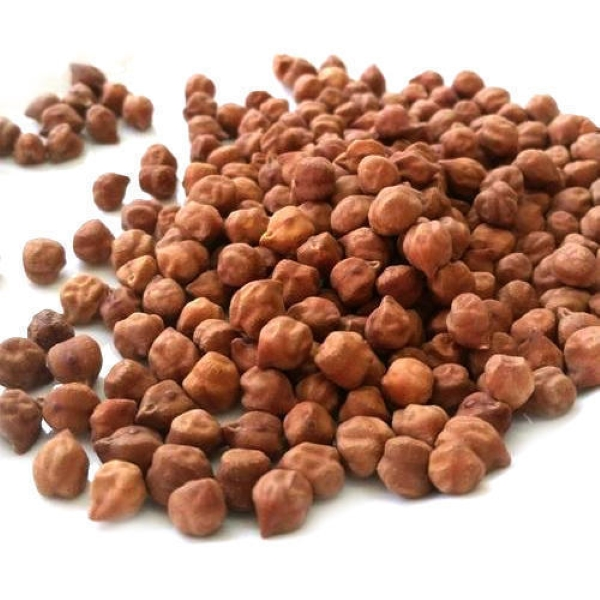

हरभरा विषयी माहिती

प्रस्तावना
कोरडवाहू क्षेत्रामध्ये हरभरा हे रबी हंगामातील महत्त्वाचे पीक आहे. महाराष्ट्रातील प्रमुख कडधान्य पिकांपैकी पश्चिम
महाराष्ट्रामध्ये हरभरा या पिकाखाली ३.०१ लाख हेक्टर क्षेत्र तर उत्पादन २.५१ लाख टन होते. हे राज्याच्या या
पिकाखालील क्षेत्र च्या सुमारे २७ टक्के इतके आहे.
जमीन
पिकासाठी मध्यम ते काळी कसदार व चांगल्या निच-याची जमीन निवडावी, हलक्या अथवा भरड, पाणथळ, चोपण किंवा क्षारयुक्त
जमीन हरभ-यासाठी निवडू नये. जमिनीचा सामू ५.५ ते ८.६ असावा.
पूर्वमशागत
खरीपाचे पीक निघाल्यानंतर खोल नांगरट करावी. कुळवाच्या दोन पाळ्या द्याव्यात. काडीकचरा वेचून जमीन स्वच्छ करावी.
खरीपामध्ये शेणखत दिले नसल्यास हेक्टरी पाच टन चांगले कुजलेले शेणखत जमीनीमध्ये मिसळावे. या प्रमाणे सप्टेंबरच्या
अखेरीस पेरणीसाठी शेत तयार ठेवावे.
सुधारित वाण
1-विजय
१०५ ते ११० दिवस
जिरायत : १४-१५ बागायत : ३५-४० उशिरा पेर : १६-१८
अधिक उत्पादनक्षम, मररोग प्रतिकाराक, जिरायत, बागायत तसेच उशिरा पेरणीस योग्य अवर्षण प्रतिकारक्षम,महाराष्ट्र
मध्यप्रदेश, गुजरात राज्यांकरिता प्रसारित
2-विशाल
११०-११५
जिरायत : १४-१५ बागायत : ३०-३५
आकर्षक पिवळे टपोरे दाणे, आधिक उत्पादनक्षमता, मररोग प्रतिकारक, अधिक बाजारभाव, महाराष्ट्र राज्याकरिता प्रसारित
3-दिग्विजय
१०५-११०
जिरायत : १४-१५ बागायत : ३५-४० उशिरा पेर : २०-२२
पिवळसर तांबूस, टपोरे दाणे, मररोग प्रतिकारक, जिरायत बागायत तसेच उशिरा पेरणीस योग्य, महाराष्ट्र राज्याकरिता
प्रसारित
4-विराट
११०-११५
जिरायत : १०-१२ बागायत : ३०-३२
काकली वाण, अधिक टपोरे दाणे, मररोग प्रतिकारक, महाराष्ट्र राज्याकरिता प्रसारित
5-कृपा
१०५-११०
सरासरी उत्पन्न बागायत : १६-१८ जिरायत : ३०-३२
जास्त टपोरे दाणे असलेला काबुली वाण, दाणे सफेद पांढ-या रंगाचे, सर्वाधिक बाजारभाव, महाराष्ट्र, मध्यप्रदेश आणि
कर्नाटक या राज्यांकरिता प्रसारित (१०० दाण्यांचे वजन ५९.४ ग्रॅम)
6-साकी ९५१६
१०५-११०
सरासरी उत्पन्न १८-२०
मररोग प्रतिकारक्षम, बागायत क्षेत्रासाठी योग्य
7-पीकेव्ही
१००-१०५
सरासरी उत्पन्न १२-१५
अधिक टपोरे दाणे, अधिक बाजारभाव, मररोग प्रतिकारक्षम
8-पीकेव्ही ४
१०० -११०
सरासरी उत्पन्न १२-१५
अधिक टपोरे दाणे, अधिक बाजारभाव, मररोग प्रतिकारक्षम
पेरणीची वेळ
हरभरा हे रबी हंगामाचे पीक असल्याने कोरडी व थंड हवा त्याला चांगली मानवते. कोरडवाहू क्षेत्रामध्ये २५ सप्टेंबरनंतर
जमिनीची ओल उडून जाण्यापूर्वी पेरणी करावी. यासाठी प्रामुख्याने विजय हा वाण वापरावा. बागायती हरभरा २० ऑक्टोंबर ते
१० नोव्हेंबर या दरम्यान पेरल्यास चांगले उत्पादन येते.
पेरणीची पध्दत आणि बियाणाचे प्रमाण
सामान्यत: देशी हरभ-याची पेरणी पाभरीने किंवा तिफणीने करावी. पेरणी अंतर ३० X १० सेमी ठेवावे.
लहान दाण्याच्या वाणाकरीता (उदा. फुले जी.-१२) - ६० ते ६५ किलो/हे.
मध्यम दाण्याच्या वाणाकरिता (विजय) - ६५ ते ७० किलो/हे.
टपो-या दाण्याच्या वाणाकरिता (विश्वास, दिग्विजय, विराट) - १०० किलो/हे.
हरभरा सरी वरब्यावंरही चांगला येतो. भारी जमिनीत ९० सेंमी रुदींच्या स-या सोडाव्यात आणि वरब्यांच्या दोन्ही बाजूला
१० सेमी अंतरावर १ ते २ दाणे टोकावे.
बीजप्रक्रिया
पेरणीपुर्वी प्रतिकिलो बियाण्यास २ ग्रॅम थायरम + २ ग्रॅम बावीस्टीन किंवा ५ ग्रॅम ट्रायकोडर्मा आणि २५ ग्रॅम
रायझोबियम आणि पी.एस.बी गुळाच्या थंड द्रावणामध्ये मिसळून चोळावे.
खतमात्रा
हरभ-याला हेक्टरी २५ किलो नत्र आणि ५० किलो स्फुरदाची आवश्यकता असते. घाटे भरण्याच्या अवस्थेमध्ये २ टक्के युरीयाची
फवारणी करावी.
आंतरमशागत
पिकाच्या जोमदार वाढीसाठी शेत सुरुवातीपासून तण विरहीत ठेवावे. पीक २० दिवसांचे झाल्यानंतर पहिली कोळपणी करावी आणि
एक महिन्याचे असताना दुसरी कोळपणी करावी.
कोळपणी शक्यतो वापशावर करावी. कोळपणीनंतर एक खुरपणी करावी. उगवणीपूर्वी
तणनाशकाचा वापर करायचा असल्यास पेंडिमिथीलीन ५ लीटर (स्टॉम्प ३० इ.सी) किंवा अँलाक्लोर (लासो ५० इ.सी) ३ लीटर एक
हेक्टर क्षेत्राकरिता ५०० लीटर पाण्यामध्ये मिसळून अंकूर जमिनीच्या पृष्ठभागावर येण्याआधी फवारावे.
पाणी व्यवस्थापन
हरभरा पीक पाण्यास अतिशय संवेदनशील असे पीक आहे. हरभरा पिकाला साधारणपणे २५ सेमी पाणी लागते. पेरणी झाल्यानंतर एक
हलके पाणी द्यावे. त्यामुळे उगवण चांगली होते.
मध्यम जमिनीमध्ये सुमारे २५ ते ३० दिवसांनी द्यावे. ४५ ते ५० दिवसांनी
दुसरे पाणी आणि आवश्यकता वाटल्यास तिसरे पाणी ६५-७० दिवसांनी द्यावे. जमिनीच्या मगदुरानुसार आणि आवश्यकतेनुसार पाणी
द्यावे.
पीक सरंक्षण
हरभरा पिकाचे घाटेअळीमुळे ३० ते ४० टक्के नुकसान होते. पीक ३ आठवड्याचे झाले असता त्यावर बारीक अळ्या दिसू लागतात.
पानांवरती पांढरे डाग दिसतात आणि शेंडे खाल्लेले असतात.
याबेळी लिंबोळीच्या ५ टक्के द्रावणाची एक फवारणी घ्यावी.
त्यामुळे अळीची भूक मंदावते. आणि त्या मरतात. पुढे १० ते १५ दिवसांनी हेलिओकिल ५०० मिली प्रति हेक्टर या विषाणूजन्य
किटकनाशकाची फवारणी करावी. या किडीचे नियंत्रण एकात्मिक पद्धतीने चांगले होते. त्यासाठी पेरणीच्या वेळी हेक्टरी २००
ग्रॅम ज्वारी, १०० ग्रॅम मोहरी आणि २ किलो धने शेतामध्ये पेरावे.
या पिकांच्या मित्रकिडीच्या आकर्षणासाठी उपयोग होतो
त्यामुळे घाटेअळीचे नियंत्रण होते. पक्षांना बसायला जागोजागी तु-याटयाची मचाणे लावावीत. त्यावर कोळसा, चिमण्या,
सांळुक्या असे पक्षी येतात आणि अळ्या वेचतात. हेक्टरी ५ फेरोमेनचे सापळे लावावेत.
काढणी
१०० ते ११० दिवसांमध्ये पीक चांगले तयार होते. पीक ओलसर असताना काढणी करु नये. घाटे कडक वाळल्यानंतर मगच हरभ-याची
काढणी करुन मळणी करावी. यानंतर धान्यास ५-६ दिवस कडक ऊन द्यावे. हरभरा कोठीमध्ये साठवून ठेवावा. त्यामध्ये
कडुलिंबाचा पाला (५ टक्के) घालावा. त्यामुळे साठवणीत कीड लागत नाही.
उत्पादन
अशाप्रकारे हरभ-याची शेती केल्यास सरासरी २५ ते ३० क्विंटल प्रति हेक्टर उत्पादन मिळू शकते.